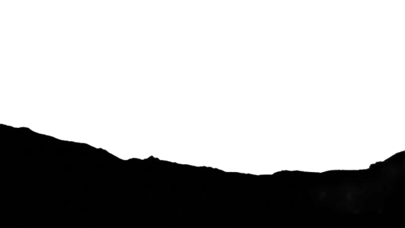

第一部 · 理性对话
濒死体验科学审计
建议佩戴耳机获得浸润式体验

↓ Earth = descend to mountain | ↑ Space = launch to space
如果有灵魂，对我来说代表什么？
意识不是大脑制造的东西。意识是独立存在的，大脑只是它在这个世界里的窗口。当窗口关上，意识没有消失——它回到了窗外那个更大的世界。
意识从来不是大脑"生产"出来的。
大脑的作用，是把意识缩小——让它刚好能通过身体这个狭窄的通道来运作。就像你透过一扇小窗户看外面的风景：你以为世界只有窗框那么大，但那只是因为窗户限制了你的视野。
当大脑停止工作，窗户消失了。
你以为一切会变黑。但实际发生的是——视野突然变得无限大。
【生活化 Lens】
你站在父亲的遗体旁边。亲戚们轮流过来跟你说节哀。有人握你的手，有人跟你说他去了更好的地方。你点头，但你其实没在听那些话。你一直在看他的手——那双修过水管、打过你、后来抱着你儿子不肯放的手。现在它就在那里，但你比任何时候都清楚：他已经不在里面了。不是"睡着了"，不是"走了"——是那个"他"，不在了。
你已经知道这个道理了——一个人，和他的身体，不是同一件事。
这章要问的是：如果身体不是那个人——那"他"去了哪里？
【年轻人视角】
你有没有过那种感觉——凌晨三点还醒着，刷完所有社交媒体，放下手机，盯着天花板。不是焦虑，不是难过，就是一种很安静的"不对劲"。好像你的意识比你的身体更大，被困在一个太小的容器里。
你可能用过冥想 app，试过正念呼吸，甚至读过一些关于"意识是什么"的科普。但每次读到"意识是大脑神经元放电的副产品"，你心里有个声音说：不对。如果我只是一堆化学反应，为什么"我"能意识到自己是一堆化学反应？
这个"观察者"是谁？
这一章看的东西很硬核：当大脑完全停止运作的时候——脑电图一条直线，心跳归零——有些人的意识不但没有消失，反而变得比活着的时候更清醒。先天失明的人在那个状态下第一次"看见"了东西。这不是鸡汤，是经过同行评审的临床数据。
如果你的大脑只是一个接收器，而不是发射塔——那"你"到底是什么？
我们来看数据怎么说。
我们先把规则讲清楚。不是我的规则——是逻辑本身的规则。
你现在持有一个信念：
“意识是大脑产生的。大脑死了，意识就没了。”
这是一个全称命题。它说的是：在所有情况下，意识都不可能脱离大脑而存在。
全称命题有一个致命弱点：
“只需要一个有效的反例，它就彻底破产。”
不需要一千个案例。不需要科学界投票。不需要可重复性。一个就够了。
就像“所有天鹅都是白的”——你不需要找到一万只黑天鹅。你只需要找到一只。一只，这个命题就死了。
所以这一章的任务非常简单：
给你看一个案例——一个人的大脑已经停止工作（脑电图平直线），但他的意识仍然存在，而且感知到了可验证的真实信息。
如果这个案例成立，“意识是大脑产生的”就被证伪了。游戏结束。
你可能已经开始找理由了。让我猜猜：
“科学界还没有普遍接受 NDE 作为证据。”
“样本量太小，不具有统计意义。”
“也许有别的解释我们还没想到。”
停一下。我要你看清楚自己正在做什么。
你正在用归纳法的标准来拒绝一个**演绎证伪**。
这两件事不是同一件事。
归纳法说：我要看到大量样本、可重复实验、科学界共识，我才接受一个新理论。
演绎证伪说：一个全称命题，只要有一个反例，就死了。不需要大量样本。不需要共识。不需要可重复。
你把归纳法的高门槛，搬过来挡在证伪面前——这不是严谨。这是偷换规则。
比方说，你说你射箭很准，那么你需要大量的证明，比如过去三个月，射了800次，命中率有多高（你需要大量证据）。
但是，如果你说你射箭“绝不会偏移红心”，那么只要你射偏一次，就足够证明你说谎了。
如果你坚信灵魂根本不存在，我不需要给你大量证据。只要证明一次就够了。
你相信黑洞存在吗？你亲眼看过吗？你等全世界物理学家 100% 同意了才信的吗？
没有。你看了几张图，读了几篇科普，觉得“说得通”，就信了。
你相信量子纠缠是真的吗？你做过实验吗？你能解释它的机制吗？
不能。但你不会说“科学界还有争议，所以我拒绝接受”。
但到了“意识可能脱离大脑”这件事上——突然，你的标准变了。
突然，你需要“像太阳一样确定”才肯接受。
为什么？
不是因为你更严谨了。是因为这个结论让你害怕。
如果意识能脱离大脑，那死亡就不是结束。如果死亡不是结束，那你怎么活、怎么死、怎么面对永恒——全都变成了真问题。
你不是在追求真相。你是在保护自己不用面对真相。这不是客观。这是恐惧伪装成理性。
这一章不需要你相信“NDE 是成熟的科学”。不需要你接受“科学界已经达成共识”。
只需要你诚实地回答一个问题：
下面这个案例，你能不能用“大脑产生意识”来解释？
如果不能——不是“也许能”，不是“将来可能有人能”，而是你现在，用你知道的所有物理和神经科学知识，解释不了——
那命题就已经被证伪了。剩下的只是一个问题：你愿不愿意承认。
这是第二个关键问题。就算承认这些体验是真的，你怎么确定是“意识离开了身体”，而不是大脑在最后时刻产生的某种超常运算？
答案在于一个简单的逻辑：
如果意识是大脑产生的，那大脑停了，意识就必须停。
这就像说：如果音乐是音箱产生的，那音箱断电了，音乐就必须停。
但如果音箱断电之后，音乐不但没停，反而变得更响亮、更清晰——那你就知道了：音乐从来不是音箱产生的。音箱只是在播放一个来自别处的信号。
NDE 的数据正是这个情况：
这三点合在一起，只有一个逻辑结论：意识不是大脑生成的。意识是独立的，大脑只是它在身体里运作时使用的工具。当工具停了，意识还在。而且不受工具的限制了。
这意味着什么？
想象你一直戴着一副很重的墨镜。你以为世界就是暗的。有一天墨镜掉了——你发现世界原来这么亮。
NDE 患者描述的就是这种感觉：大脑停止工作之后，他们的意识体验不是变暗、变模糊，而是变得前所未有地清晰。
这完全违反了"大脑产生意识"的预期。如果大脑是意识的发电机，断电就该一片黑。但实际情况是：断电之后，灯反而更亮了。
| 数据来源 | 关键发现 |
|---|---|
| AWARE 研究 [NDEXP-002] | 2,060 例心脏骤停患者中，约 9% 报告了 NDE。部分体验发生在心跳停止后 20-60 秒内——此时脑电图已经是一条平直线，大脑皮层没有任何可测量的电活动。 |
| van Lommel 前瞻性研究 [NDEXP-001] | 344 例心脏骤停幸存者中，18% 报告了 NDE。关键发现：大脑缺氧越严重，体验反而越清晰。这完全反直觉——就像说电池越没电，手电筒越亮。 |
| 超觉清醒特征 | 报告者一致描述：体验比日常清醒状态"更真实"。人生回顾中可以同时感知自己和他人的情绪，呈现 360 度全景式信息处理——这远超正常大脑一次只能处理一件事的能力。 |
| Greyson NDE 量表 [NDEXP-005] | NDE 体验的认知清晰度评分系统性高于正常清醒状态，且与心脏骤停持续时间呈正相关。停得越久，越清醒。 |
| 如果大脑产生意识，应该发生什么 | 实际发生了什么 |
|---|---|
| 脑电图平直 → 意识归零 | 意识达到"超清"级别 |
| 缺氧越严重 → 认知越混乱 | 缺氧越严重 → 认知越清晰 |
| 无皮层电活动 → 不可能形成记忆 | 患者形成了终身不褪色的超高清记忆 |
| 大脑一次处理一件事 → 不可能同时处理数十年信息 | 人生回顾中同时处理数十年信息流 |
每一行都是一个矛盾。四个矛盾同时出现，不是巧合——是模型错了。
这意味着什么？
这是最硬的证据。不是"我感觉到了什么"，而是"我看到了一个具体的事实，事后被第三方确认了"。
如果一个人的大脑已经停了，眼睛闭着，身体躺在手术台上——他怎么可能知道隔壁房间发生了什么？
他不可能知道。除非他的意识真的离开了身体，去到了那个位置。
| 案例 | 发生了什么 | 验证 |
|---|---|---|
| 假牙案例 [NDEXP-010] | 一名深度昏迷患者（瞳孔散大，完全无意识）复苏后告诉护士："你把我的假牙放在了那个带滑轮的小推车的抽屉里。"这件事发生在他完全"死亡"的期间。而且那个护士之后好几天都没再出现在那个病房——患者不可能事后从别人那里听说。 | ✅ 当事护士确认 |
| Al Sullivan 案例 [NDEXP-011] | 心脏手术患者 Sullivan 术后准确描述了主刀医生的一个独特习惯：用肘部指挥助手（因为手已消毒不能碰非无菌物）。Sullivan 术前从未见过这个医生，手术中全身麻醉、眼睛被贴住。 | ✅ 医生本人确认 |
| AWARE II 实验 [NDEXP-009] | 研究者在手术室天花板附近放置了只能从上方看到的随机图像，测试是否有患者能在离体状态下看到。虽然样本量有限，但已有个别案例报告了手术室内其他可验证的细节。 | 🔄 方法论验证进行中 |
| 如果意识只存在于大脑中，应该发生什么 | 实际发生了什么 |
|---|---|
| 大脑停了 → 不可能有任何感知 | 患者获取了精确的环境信息 |
| 眼睛闭着 → 不可能看到任何东西 | 患者"看到"了具体的物体和动作 |
| 身体在这里 → 只能感知身体所在位置的信息 | 患者感知了身体周围甚至其他房间的信息 |
| 如果是幻觉 → 应该包含错误 | 所有信息经第三方验证完全准确 |
幻觉不会是对的。梦不会被护士确认。
如果一个"死人"告诉你一件他不可能知道的事，而那件事是真的——那他的意识在"死亡"期间，确实在某个地方运作着。
这意味着什么？
如果 NDE 只是大脑缺氧产生的随机幻觉，那每个人的幻觉应该都不一样——就像每个人做的梦都不一样。
如果 NDE 是文化影响的产物（比如因为看过电影、听过故事），那不同文化的人应该报告完全不同的体验——中国人应该看到阎王，美国人应该看到天使，印度人应该看到湿婆。
但实际情况是：不管你是谁、在哪里、信什么、几岁——核心经历几乎一模一样。
这就像全世界的人，从来没有互相联系过，却画出了同一张地图。这说明他们去的是同一个地方。
| 谁经历了 | 他们报告了什么 | 为什么这很重要 |
|---|---|---|
| 1976 唐山大地震幸存者 [NDEXP-006]（81例） | 隧道、光、已故亲人、边界、人生回顾 | 这些人在彻底的唯物主义教育环境中长大。没有人教过他们"死后会看到光"。但他们报告的内容，和美国心脏病患者说的一模一样。 |
| 印度 NDE 研究 [NDEXP-007] | 出体、光、边界、被告知"还没到时候" | 虽然有些文化细节不同（比如"信使"代替了"隧道"），但核心结构完全一致。就像同一首歌的不同语言版本——旋律是一样的。 |
| 3-12 岁儿童 [NDEXP-004]（无宗教教育） | 光、隧道、已故亲人（包括从未见过照片的祖辈）、边界 | 这些孩子太小了，没看过相关电影，没听过相关故事，没受过任何宗教教育。他们不可能是"学来的"。而且他们认出了从未见过的已故亲人。 |
| 自杀未遂者 [NDEXP-008] | 核心元素与其他 NDE 一致，但更多出现对他人痛苦的感知 | 如果 NDE 是心理防御机制（大脑在死前给你一个"美好幻觉"来安慰你），那自杀者应该得到一个"逃避性"的体验。但实际上，他们的体验是"教育性"的——让他们看到自己的死会给别人带来什么。这不是安慰，这是真相。 |
| 经历层次 | 内容 | 西方 | 中国 | 印度 | 儿童 | 先天失明者 |
|---|---|---|---|---|---|---|
| 第一层 | 平安、无痛 | ✓ | ✓ | ✓ | ✓ | ✓ |
| 第二层 | 离开身体 | ✓ | ✓ | ✓ | ✓ | ✓ |
| 第三层 | 通过某种通道 | ✓ | ✓ | 变体 | ✓ | ✓ |
| 第四层 | 遇见已故的人 | ✓ | ✓ | ✓ | ✓ | — |
| 第五层 | 遇见一个光的存在 | ✓ | ✓ | ✓ | ✓ | ✓ |
| 第六层 | 到达一个边界，被告知要回去 | ✓ | ✓ | ✓ | ✓ | ✓ |
六层经历，跨越五个完全不同的群体，高度一致。
随机幻觉不会这样。文化学习不会这样。唯一的解释：他们经历的是同一个真实的过程。
这意味着什么？
这是整个证据链中最无法解释的一环。
一个从出生就完全失明的人——视网膜没有发育，视神经从未传导过光信号，大脑中从未建立过处理视觉的回路——在 NDE 期间，第一次"看见"了东西。而且看到的是对的。
这意味着什么？
意味着"看见"这件事，不需要眼睛。
眼睛只是意识在身体里时用来接收光线的工具。但意识本身，具备独立的感知能力。当身体这个限制消失了，意识不需要眼睛也能"看"。
就像一个人一辈子都通过一扇小窗户看世界。他以为世界只有窗框那么大。有一天墙倒了——他发现自己一直站在旷野中。视野从来没有被真正限制过，只是被窗框挡住了。
| 数据来源 | 关键发现 |
|---|---|
| Ring & Cooper 研究 [NDEXP-003] | 31 名视障/失明者的 NDE 研究。其中 14 名从出生就完全失明（从未有过任何视觉经验）。结果：他们在 NDE 中报告了清晰的视觉——颜色、形状、光线、人的长相。 |
| Vicki Umipeg 案例 | 先天完全失明（早产导致视网膜病变，视神经从未发育）。22 岁车祸导致 NDE。她说："我第一次知道自己长什么样。"她看到了自己的身体、手术室的灯光、医护人员的动作，然后是隧道和光。 |
| Brad Barrows 案例 | 先天完全失明。8 岁溺水 NDE。他看到了自己在水中的身体、救援人员的动作、周围环境 of 颜色和布局。 |
| 准确性验证 | 这些失明者描述的视觉内容——颜色、空间关系、人物特征——经第三方核实，与物理现实一致。 |
| 如果视觉是眼睛和大脑的产物，应该发生什么 | 实际发生了什么 |
|---|---|
| 没有视网膜 + 没有视觉回路 → 不可能产生视觉 | 先天失明者产生了精确的视觉 |
| 视觉需要完整的硬件链路（光→眼睛→神经→大脑）→ 链路从未建立就不可能有视觉 | 链路完全缺失，视觉依然存在 |
| 盲人如果"看到"什么，应该只是其他感官的模糊想象 → 不应包含真实的颜色和空间信息 | 包含了可验证的颜色、空间、细节 |
| 大脑是视觉的唯一来源 → 没有视觉硬件就没有视觉 | 视觉独立于硬件而存在 |
一个从未见过任何东西的人，在大脑停止工作的时候，第一次看见了——而且看到的是真的。
这一条，没有任何已知的物理机制可以解释。
让我们把四个模块放在一起看：
意识不是大脑制造的。大脑只是意识在这个世界里使用的一个工具。当工具停了，意识不会消失——它只是不再受工具的限制。
旧的理解：大脑 → 产生意识。大脑死了，意识就没了。
新的理解：意识是独立的。大脑是它在身体里运作时的窗口。窗口关了，意识回到窗外——那个更大的、不受限制的状态。
这不是信仰。这是数据指向的唯一逻辑结论。
下表不解释。下表陈列。
| 研究 / 案例 | 样本类型 | N | 关键发现 | 发表平台 |
|---|---|---|---|---|
| van Lommel [NDEXP-001] | 心脏骤停幸存者 | 344 | 脑缺氧越重 → 认知越清晰 | The Lancet |
| AWARE (Parnia) [NDEXP-002] | 心脏骤停患者 | 2,060 | 平直 EEG 期间超觉清醒 | Resuscitation |
| Ring & Cooper [NDEXP-003] | 先天完全失明者 | 31 (14先天) | 无视觉硬件 → 产生精确视觉 | Mindsight |
| Morse [NDEXP-004] | 3–12 岁儿童（无宗教教育） | — | 完整经历，含未见过祖辈信息 | Closer to the Light |
| 刘建勋等 [NDEXP-006] | 唐山地震幸存者（唯物主义环境） | 81 | 核心元素与西方完全同构 | 中国内部报告 |
| Pasricha & Stevenson [NDEXP-007] | 印度教徒 | — | 文化细节不同，核心结构一致 | 学术论文 |
| Greyson [NDEXP-008] | 自杀未遂者 | — | 非逃避性，具教育性 | JAMA |
| AWARE II (Parnia) [NDEXP-009] | 心脏骤停患者（隐藏目标） | — | 可验证离体感知 | Circulation |
| 假牙案例 [NDEXP-010] | 深度昏迷患者 | 1 | 瞳孔散大期间精确感知护士操作 | van Lommel 记录 |
| Al Sullivan [NDEXP-011] | 心脏手术患者 | 1 | 术后描述主刀医生独特习惯动作 | IANDS 档案 |
本章对濒死体验（NDE）中出现的四类异常现象进行了系统性审查。每一模块都以"如果大脑产生意识，应该发生什么"为基准，将实际观测数据与之对比。最终结论：大脑不是意识的来源，而是意识在身体中运作时的窗口。当大脑停止工作，意识不仅没有消失，反而呈现出不受限制的、更清晰的运行状态。
本报告基于以下已发表的同行评审研究及临床数据：
你刚刚看完的，不只是一组科学数据。
你看见的是：死亡，不是结束。
在你读这本书之前，死亡是一道墙。墙那边什么都没有，所以"神是谁"最多是一个周末下午可以想想的问题——想清楚了也好，想不清楚也罢，反正墙那边是黑的，无所谓。
但现在你知道了，墙那边不是黑的。
墙那边，是永恒。
你的灵魂，会在那里继续存在——不是几十年，不是几百年，是在时间本身结束之后，依然存在。
这件事改变了一切。
死亡不再是“一切的结束”。死亡是“你进入永恒的第一天”。
而你，还没有准备好。
你的灵魂，在永恒里，处于什么状态？
这不是哲学问题。这是你将要面对的现实——而且是在时间用完之后，你没有机会重新选择的现实。
你开始知道，你需要一个答案。
但答案在哪里？
谁，有永恒里的答案？
只有一种存在者，能对永恒负责任地说话——那就是，站在时间之外的那一位。
我们把祂叫做：真神。
那么，真神是谁？